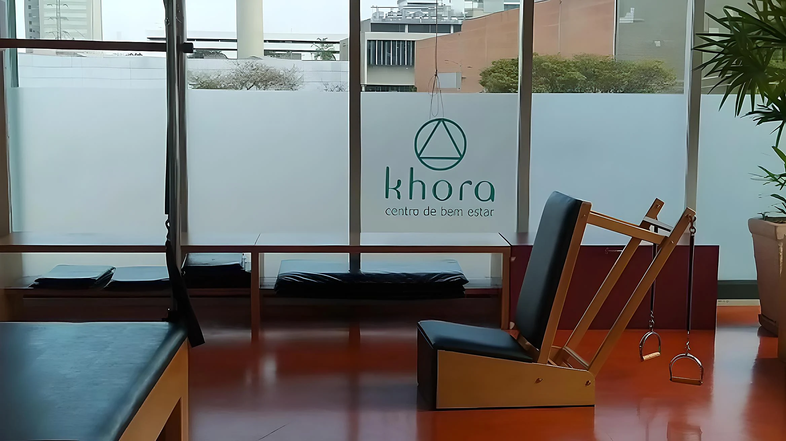
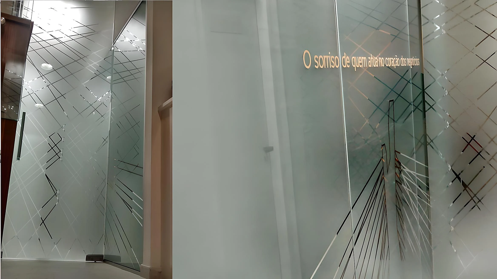

Adesivo Jateado em Escritórios: Como Garantir Privacidade sem Perder a Iluminação Natural
Em projetos corporativos, o tratamento de divisórias e portas de vidro exige equilíbrio entre privacidade, iluminação, segurança e identidade visual. Entenda como especificar películas jateadas e evitar erros na execução.
As divisórias de vidro são cada vez mais utilizadas na arquitetura corporativa por favorecerem a integração visual e a passagem da iluminação natural. Entretanto, essa transparência nem sempre é adequada para salas de reunião, consultórios, ambientes administrativos e espaços que exigem discrição.
Uma das perguntas mais comuns durante a especificação desses ambientes é: como garantir privacidade em salas de vidro sem comprometer a luminosidade do escritório?
A aplicação de adesivos jateados pode resolver boa parte dessa necessidade, desde que o projeto considere a intensidade do efeito fosco, a posição dos usuários e a finalidade de cada ambiente.

O adesivo jateado impede completamente a visão?
Depende do material utilizado e do efeito pretendido.
O adesivo jateado convencional difunde a luz e dificulta a visualização direta através do vidro. Entretanto, ele não deve ser confundido com um elemento totalmente opaco.
Em determinadas condições de iluminação e proximidade, ainda pode ser possível perceber silhuetas e movimentos.
Para salas de reunião que exigem confidencialidade visual, o especificador deve avaliar a cobertura integral, o grau de opacidade e a necessidade de combinar materiais.
Qual é a melhor altura para instalar uma faixa jateada?
Não existe uma altura universal adequada a todos os ambientes.
A posição da faixa deve considerar usuários sentados e em pé, o mobiliário, a circulação e a visibilidade necessária para identificar superfícies envidraçadas.
Em áreas de grande circulação, o projeto também deve considerar os requisitos aplicáveis de sinalização de segurança e acessibilidade.
Uma faixa decorativa que funciona visualmente em uma sala de diretoria pode não atender às necessidades de um corredor corporativo ou de uma recepção hospitalar.
É possível aplicar o logotipo da empresa no jateado?
Sim. A personalização pode ser realizada com recortes, grafismos, padrões geométricos e elementos da identidade visual.
É possível trabalhar com faixas contínuas, composições parciais ou cobertura de grandes superfícies, criando ambientes alinhados ao projeto arquitetônico.
Em escritórios com diferentes setores, o desenho também pode ajudar a identificar departamentos e organizar visualmente os espaços.

O que deve constar na especificação técnica?
Antes de solicitar um orçamento, arquitetos, engenheiros e gestores de obras devem informar:
- dimensões e quantidade de superfícies envidraçadas;
- tipo e condições dos vidros;
- necessidade de privacidade parcial ou integral;
- posição das faixas e elementos gráficos;
- referência do padrão visual e acabamento;
- condições de acesso e execução dos serviços;
- requisitos de segurança, manutenção e limpeza.
Essas informações ajudam a evitar incompatibilidades entre o projeto aprovado e o resultado instalado.
Como evitar falhas na aplicação?
A qualidade do material é importante, mas não substitui uma instalação adequada.
Superfícies contaminadas, medidas incorretas, alinhamento inadequado e falhas de acabamento podem produzir bolhas, desalinhamentos e irregularidades visuais.
Em projetos com diversas salas e pavimentos, recomenda-se validar uma amostra ou trecho-piloto antes da execução completa.
Comunicação visual integrada ao projeto corporativo
O tratamento dos vidros não precisa ser uma intervenção isolada.
Ele pode fazer parte de um projeto que integre sinalização de ambientes, identificação de setores, logotipos em acrílico, elementos gráficos em paredes e outros recursos de comunicação visual corporativa.
A Momentvm Opvs, em São Paulo, desenvolve soluções personalizadas de adesivação, películas e comunicação visual para empresas, arquitetos e construtoras.
Está especificando divisórias de vidro para um escritório, clínica ou empreendimento corporativo? Entre em contato com a Momentvm Opvs e apresente o projeto para uma avaliação técnica.

Momentvm Opvs — Comunicação Visual e Decoração
30 anos de experiência profissional.
São Paulo — SP
Você imagina, nós tornamos realidade.